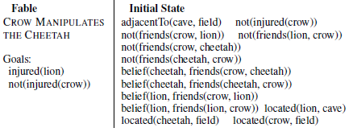
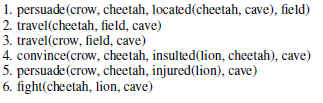

Define a basic language and inplement childlike representation structures:
We intend to imbue them with:
If LAS (a language learning model) were built like Winograd’s (1972) program to converse with another speaker instead of receiving sentences passively, it would have representational structures that conceivably could be useful in acquiring rules for interrogatives, conditionals, imperatives, and so on. And if it had a more childlike semantic representational system, which categorized the world into actors, actions, and recipients of actions, possessors and possessed, objects and locations, and so on, its linguistic abilities might even resemble those of young children - Steven Pinker
hard-coded utility/ drives from evolutionary psychology (how the mind works)
TODO: evolve them later
generative networks for past/future/capabilities/event/etc-generation past,future,capabilities networks trained at time-steps
Create nodes representing concepts: basic words, on node for each agent, numbers, events, etc
| agent names | |
|---|---|
| basic verbs | move give speak |
| logic | IF AND OR NOT YES TRUE because |
| Theory of mind | want believe |
| time | -ed will before after WHILE soon later _times |
| causality/action | if because try can should |
| interrogatives, conditionals, imperatives |
didn't work ? shoehorn skills until it works --- colaboration needed
pronouns: I you every/some/no-body
kin: father dagther mother son aunt uncle niece nephew cousin
wh - when what who where why which whom whither how how-much
probability: rarely seldom sometimes often always
quantitatives: no few some many ALL every almost positive negative zero one two three
comparison: same different like big small
join separate oppose friend enemy revenge betray ask answer order obey forbid allow call promise swear bless curse err forget teach learn
just free caring holy loyal respect "accidents, agency, agreement, alternatives, apologies, arbitration, attempts, bias, blame, coercion, commensuration, conflict, constraints, conventions, costs, crimes, culpability, culture, debt, deception, decisions, dependence, deterrents, distractions, domination, duress, duty, escalation, excuses, exoneration, failures, fairness, false beliefs, forgiveness, freedom, goals, goodness, identity, ignorance, impairment, impartiality, innocence, intervention, justifications, mental models,mercy, mistakes, moral rules, norms, paragons, passion, persons, plans, pReferences, prohibitions, punishment, recklessness, reparations, reputation, retaliation, shame, side-effects, strategies, temptation, tort, trust, universals, utility, values, vengeance, virtues, and will"
Initially the language will be a lisp-like tree structure like (believe I (give A B +5 t+2)) means "I believe that A will give +5 energy to B in the time now+2". Implementing proper natural language is a probable next step
todo
A (fixed) quantity of nodes are reserved for this (so over time thre may be overwriting of less used memories). Each memory node links to agent, time, action of the event, etc.
todo
bayesian inducton from events, speech to the mind states of other agents , and from mind states to possible actions. during the training a unsupervised network trains (telepathy) using triples of belief, desire action for itself and other agents. During testing this network is used to induce the mind states of other agents from evidence. On LimitToM, LimitToM2 indicates that no more than 2 levels of ToM may be optimal. (Battle of Wits scene from The Princess Bride) BDI (un)supervised network – given beliefs, desires and/or actions of other agents and self it gives a probable sate of mind/ action for the agent. It learns from training where the data is accessible (simulating “reading” events from a novel), and from thinking process (simulating other agent) that the agent may do.
The network tries to have a single unified view of the world and solve inconsistencies. Inconsist
The networks give a probability for a outcome or inference, that may be projected on the magnitude nodes
logic conectives (and, or , not) -Probably will be bsaed on hard-coded/ learnt rules of reasoning:
Ex: A AND B hit c => A HIT C / B HIT C
Negation - > TODO ?
chunk /unchunk items linked by a logic connector:
Mary and Sue -> chunk1
For example: A thinks that B thinks that C thinks of D – it is easier to chunk this as (avoiding repetition of concept and using a shallower embedding) LimDecision
Uncertain states activate a curiosity instinct to ask , experiment or play. It is useful if the agents explore. This may be implemented by RL-like exploration or even as a kind of playful / curiosity instinct IntMot
[ImaginDLR] Imagination-Augmented Agents for Deep Reinforcement Learning
Adopt the framework of multiagentLogic programming LogicProg1, LogicProg2, for negotriation and smooth it to use neutral netrorks.
The network uses cycles of pondering to plan and make inferences about the social world: ( MAC , WorkMem ) builds a neural-controlled neural state machine to parse an inage
Contorlling performance in tasks to decide if need more attention PerfMon
Each agent has an individual episodic memory. There are a prediction network and a Task Network which are shared between agents, so as to speed learning:
Prediction network (world model) P (s1 | s) probability future / generative network (generate futures) P(s | O) given observation, what is the most probable state U(s) state value
Task network - (Procedural memory) - Π(s) Actual actions and cognitive actions What to save to/retrieve from memory, to (unbchunk) Who to model (theory of mind), what to say Change beliefs Abstract concepts: H2 + O2 -> H2O
The internal representation of (other) agents may also be groups/coaliitons with unique beliefs/ goals.
Expertise -> Consolidation of laborious streams of thinking onto chunks of automatic processing. This process is used also in other contexts..
A list of node from low to high values. Trains a convolutional network to represent quantiiatives ( no, few,m some ,many all), intensity( big, small, very, almost), probability ( sure, often, sometimes, never). Bases its judgement on reference( most common) values. For example a value is “big” if bigger than the reference class. Linear neuron set that doubles as time, space, magnitude intensity indicators Magn1, Magn2 . Counting NumLearn. Learn numerosity neurons from experience LearnQty. Will have operators for approximate number system, adding, compare (more, less). Maybe a module for precise computational operations (non-human)
Dora2- Predicate learning in neural systems: Discovering latent generative structure
Given the “unconscious”/ subsymbolic learning the agent will store in the netxork, it is important if it can distill it into (approximate) rules, by means of ILP (Inductive Logic Programming) LogRuleInd, LogRuleInd2, , both so the agent can consciously reason about the situations and for user’s insight on the (social) patterns discovered. It is a way to create social theories and tocompare with known patterns in real-wolrd (evolutionary) psychology. Related to that, one could use common-sense rules to simulate the agent’s mental states and their planning to achieve goals by manipulationg the other agent’s mental states LogicTom1, LogicTom3. The drawback of these works is that they use logical rules that are brittle and difficult to be comphreensive, and also do not flexible communication, planning and reasoning . One of the main goals of the present project is to adapt this kind of work to use more flexible neural networks and make the system self-learn intuitive psychology (Theory of Mind) by self-play and crowdsourcing of social interactions.
Nodes represent positive and negatve valuation, to push the agent towards positive outcomes.
in SocialPlan a situation is described a initial state that is logically manipulated using a cognitive cycle (could also be used a planning/ logic theorem prover) to arrive at the solution:
A review of FPS
Like many architectures, FPS contains a working memory and a long-term memory. The primary structure in the former is the problem, which includes a state description and a goal description. Another important structure is an intention or operator instance. A solution to problem P comprises an applied intention I, a subproblem for transforming P’s state into one that meets I’s conditions, a subproblem for transforming the state produced by applying I into one that satisfies P’s goals, and solutions to both subproblems. The base case is a trivial solution in which the state satisfies the goals. Long-term memory contains two forms of content: domain knowledge, which defines predicates, operators, and inference rules for a given problem domain, and strategic knowledge, which is domain independent. Domain content provides the material that planning uses to generate new subproblems, intentions, states, and goals; strategic content determines the details of the problem-solving process.
As in Newell, Shaw, and Simon’s (1958) theory, problem solving in FPS involves transforming an initial state into one which satisfies the goal description by applying operators that manipulate state information. The architecture operates in cognitive cycles that involve five stages, each of which uses structures in long-term memory to update the contents of working memory. These include selecting a problem P on which to focus, selecting an operator instance I relevant to P, generating new subproblems based on I, checking for failure (e.g., loops), and checking for success (e.g., satisfied goals). For our work on social planning, we incorporated strategic knowledge that combines iterative-sampling search, backward chaining, and eager commitment methods. Our pilot studies suggested that goal-driven problem solving is more focused when tasks involve altering other agents’ mental states, although another approach like forward chaining might find the same solutions with additional search.(...)
This reasoning process has more general applicability, but it is especially important in social settings. The inference stage can operate over domain rules, but SFPS also takes advantage of conceptual rules like
not(belief(A, X) < - belief(A, not(X)) and not(belief(A, not(X)) <- belief(A, X) .
Example

The crow doesn’t like the cheetah, that thinks he is his friend. The crow wants the lion to be injured
The social planner runs and find a solution:

The crow persuades the cheetah that the lion in the cave insulted the cheetah and is injured. The cheetah enters the cave and they fight
Play as curiosity, experimentation – see above. To the agents art (ex, games, competition, storytelling) as a form of expression
Humor- for example using a theory of humor as bening (rule) violation. (EX, the dog enters the church). Or as a means to contest dominance.
immersion with universe
belief in afterlife? spiritual beings?
Hardcode belief in invisible big powerful benevolent agent.
.